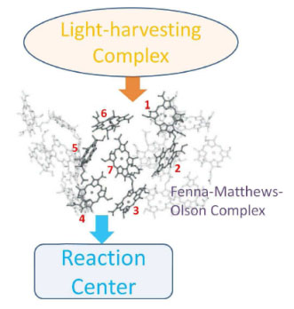
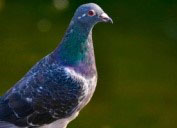
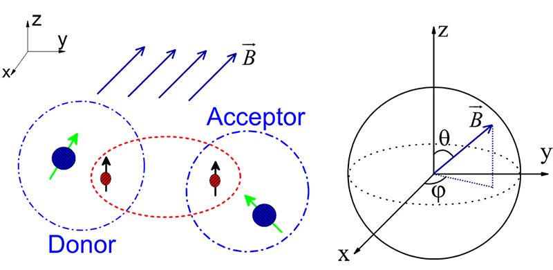

Sabre Kais Group
Quantum Information and Quantum Computation
Study of Entanglement and Quantum Phase Transitions
Ever since the appearance of the famous EPR Gedanken experiment, the phenomenon of entanglement, which features the essential difference between classical and quantum physics, has received wide theoretical and experimental attentions. Generally speaking, if two particles are in an entangled state then, even if the particles are physically separated by a great distance, they behave in some respects as a single entity rather than as two separate entities. This nonlocal effect potentially allows entailed communication exceeding the speed of light! It is no doubt that the entanglement has been lying in the heart of the foundation of quantum mechanics.
Recently a desire to understand the quantum entanglement is refueled by the development of quantum computation. Besides quantum computations, entanglement has also been the core of many other active research such as quantum teleportation, dense coding, quantum communication and quantum cryptography. It is believed that the conceptual puzzles posed by entanglement - and discussed more than fifty years - have now become a physical source to brew completely novel ideas that might result in applications.
The main thrust of this project is calculating entanglement for one- and two-dimensional spin systems, atoms, molecules and arrays of quantum dots and relating it to decoherence time, which is a quantity measurable in experiments and of relevance in various proposals for traditional and quantum computer hardware. Of particular interest is to study one or more "impurities" embedded into such systems: the impurity spins will play the role of information-processing units (qubits, in a quantum computer), while the rest of the system will play the role of the "environment". This setup is of direct relevance for information processing with quantum dots, where an important component of the environment is formed by nuclear spins of the substrate.
See PDF Review Article Here



- The Radical Pair Mechanism and the Avian Chemical Compass: Quantum Coherence and Entanglement, Y. Zhang, G. Berman and S. Kais, International Journal of Quantum Chemistry, 115, 15 (2015)
-
Multipartite quantum entanglement evolution in photosynthetic complexes, J. Zhu et . al, J. Chem. Phys 137, 074112 (2012)
-
Omar Osenda, Zhen Huang and Sabre Kais, "Tuning the Entanglement for a 1D Magnetic System with Anisotropic Coupling and Impurities", Phys. Rev. A 67, 062321-4 (2003), has been selected for the July 14, 2003 issue of the Virtual Journal of Nanoscale Science & Technology (http://www.vjnano.org)
-
Jiaxiang Wang and Sabre Kais, "Scaling of entanglement in finite arrays of exchange-coupled quantum dots", Int. J. Quant. Information Vol 1 (3), 375-387 (2003).
-
Zhen Huang, Omar Osenda and Sabre Kais, "Entanglement of formation for one-dimensional magnetic systems with defects", Physics Letters A 322, 137-145 (2004).
-
Jiaxiang Wang and Sabre Kais, "Scaling of entanglement at quantum phase transition for two-dimensional array of quantum dots", Phys. Rev. A 70, 022301 (2004). Has been selected for the August 16, 2004 issue of Virtual Journal of Nanoscale Science & Technology. Also has been selected for the August 2004 issue of Virtual Journal of Quantum Information.
-
Zhen Huang and Sabre Kais, "Dynamics of Entanglement for One-Dimensional Spin Systems in an External Time-Dependent Magnetic Field", Int. J. Quant. Information 3, 483 (2005).
-
Omar Osenda, Pablo Serra and Sabre Kais, "Dynamics of Entanglement for Two-Electron Atoms", (submitted 2005).
-
Zhen Huang and Sabre Kais, "Entanglement as Measure of Electron-Electron Correlation in Quantum Chemistry Calculations", Chem. Phys. Letters 413, 1 (2005).
-
Zhen Huang and Sabre Kais, "Entanglement Evolution of One-dimensional Spin Systems in External Magnetic Fields", Phys. Rev. A 73, 022339 (2006), has been selected for the March 6, 2006 issue of the Virtual Journal of Nanoscale Science & Technology (http://www.vjnano.org); March 2006 issue of Virtual Journal of Quantum Information (http://www.vjquantuminfo.org).
-
Zhen Huang, Gehad Sadiek and Sabre Kais, "Time evolution of a single spin inhomogeneously coupled to an interacting spin environment", J. Chem. Phys. 124, 144513 (2006), has been selected for the April 24, 2006 issue of Virtual Journal of Nanoscale Science & Technology And has been selected for the April 2006 issue of Virtual Journal of Quantum Information.
-
Hefeng Wang and Sabre Kais, "Entanglement and Quantum Phase Transition in a One-Dimensional System of Quantum Dots with Disorder", Int. J. Quant. Information (in press, 2006).
-
Hefeng Wang and Sabre Kais, "Quantum Teleportation in One-Dimensional Quantum Dots System", Chem. Phys. Letters 421,338 (2006).
-
Sabre Kais, "Entanglement, Electron Correlation and Density Matrices", Advances in Chemical Physics Vol 134, edited by D. A. Mazziotti (Wiley, New York, 2007).